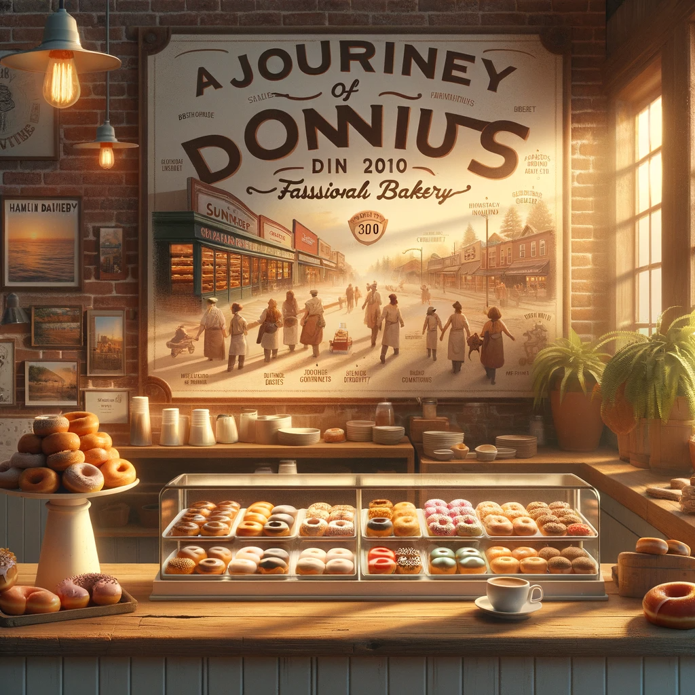

Welcome to Sunrise Donuts, a cozy and inviting haven for donut lovers! Our store is designed to offer you a warm and friendly atmosphere where you can enjoy our delicious treats. We take pride in our clean, well-organized, and vibrant space that reflects our passion for baking and serving.
Our staff is the heart of Sunrise Donuts. A team of dedicated, skilled, and friendly individuals, they are always ready to greet you with a smile and assist you in making the perfect selection. Each member of our team is trained not only in the art of baking and coffee making but also in providing exceptional customer service. Whether you're a regular or a first-time visitor, our staff will make you feel right at home.
Sunrise Donuts was born out of a love for simple, delicious, and handcrafted donuts. Our journey began in 2010, when Sally Sunrise, a passionate baker, decided to turn their dream into reality. What started as a small, family-run bakery has now blossomed into a beloved local establishment.
Over the years, we have stayed true to our roots, using traditional recipes and techniques while also embracing innovation and creativity. Our commitment to quality and freshness has earned us a loyal following. We cherish the memories we've created and the community we've built, and we look forward to many more years of serving delightful treats.